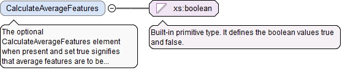
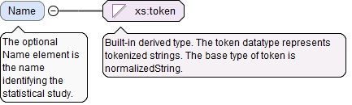
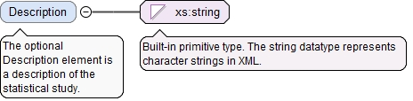

<xs:element name="Version" type="VersionType" minOccurs="0"><xs:annotation><xs:documentation>The optional Version element gives version information about the statistical study.</xs:documentation></xs:annotation></xs:element>
The required n attribute is the number of Id elements in this array.
Source
<xs:element name="FeatureItemIds" type="ArrayReferenceType"><xs:annotation><xs:documentation>The FeatureItemIds element is the list of feature items to be included in this statistical study.</xs:documentation></xs:annotation></xs:element>
The optional CalculateAverageFeatures element whenpresent and set true signifies that average features areto be calculated in this statistical study.
Diagram

Type
xs:boolean
Properties
content
simple
minOccurs
0
Source
<xs:element name="CalculateAverageFeatures" type="xs:boolean" minOccurs="0"><xs:annotation><xs:documentation>The optional CalculateAverageFeatures element when present and set true signifies that average features are to be calculated in this statistical study.</xs:documentation></xs:annotation></xs:element>
The required n attribute is the number of Id elements in this array.
Source
<xs:element name="CharacteristicItemIds" type="ArrayReferenceType"><xs:annotation><xs:documentation>The CharacteristicItemIds element is the list of characteristic items to be included in this statistical study.</xs:documentation></xs:annotation></xs:element>
Each optional StatsValuesPerChar element identifies thevarious statistical values to be accumulated on aper-characteristic basis in this statistical study plan. Forexample, the Cpk of each characteristic might be accumulated.Each optional StatsValuesPerChar element also optionallyidentifies the statistical software to use for the evaluation.
<xs:element name="StatsValuesPerChar" type="ListAccumulatedStatsValuesType" minOccurs="0" maxOccurs="unbounded"><xs:annotation><xs:documentation>Each optional StatsValuesPerChar element identifies the various statistical values to be accumulated on a per-characteristic basis in this statistical study plan. For example, the Cpk of each characteristic might be accumulated. Each optional StatsValuesPerChar element also optionally identifies the statistical software to use for the evaluation.</xs:documentation></xs:annotation></xs:element>
Each optional StatsValuesPerSubgroup element identifiesthe various statistical values to be accumulated on aper-subgroup basis for this statistical study plan. Forexample, the average value of each characteristic mightbe accumulated for each subgroup. Each optionalStatsValuesPerSubgroup element also optionally identifies thestatistical software to use for the evaluation.
<xs:element name="StatsValuesPerSubgroup" type="ListSubgroupStatsValuesType" minOccurs="0" maxOccurs="unbounded"><xs:annotation><xs:documentation>Each optional StatsValuesPerSubgroup element identifies the various statistical values to be accumulated on a per-subgroup basis for this statistical study plan. For example, the average value of each characteristic might be accumulated for each subgroup. Each optional StatsValuesPerSubgroup element also optionally identifies the statistical software to use for the evaluation.</xs:documentation></xs:annotation></xs:element>
Each optional StatsValuesSummarys element identifies a list ofstatistical values to be summarized over all characteristics inthis statistical study plan. For example, the Cpk value overall characteristics might be summarized. Each optionalStatsValuesSummarys element also optionally identifies thestatistical software to use for the evaluation.
The required n attribute is the number of summaries in the list.
Source
<xs:element name="StatsValuesSummarys" type="SummaryStatsValuesListType" minOccurs="0" maxOccurs="unbounded"><xs:annotation><xs:documentation>Each optional StatsValuesSummarys element identifies a list of statistical values to be summarized over all characteristics in this statistical study plan. For example, the Cpk value over all characteristics might be summarized. Each optional StatsValuesSummarys element also optionally identifies the statistical software to use for the evaluation.</xs:documentation></xs:annotation></xs:element>
<xs:element name="PreInspectionTraceability" type="PreInspectionTraceabilityType" minOccurs="0"><xs:annotation><xs:documentation>The optional PreInspectionTraceability element gives traceability information that applies to the statistical study.</xs:documentation></xs:annotation></xs:element>
The optional Name element is the name identifying thestatistical study.
Diagram

Type
xs:token
Properties
content
simple
minOccurs
0
Source
<xs:element name="Name" type="xs:token" minOccurs="0"><xs:annotation><xs:documentation>The optional Name element is the name identifying the statistical study.</xs:documentation></xs:annotation></xs:element>
The optional Description element is a description of thestatistical study.
Diagram

Type
xs:string
Properties
content
simple
minOccurs
0
Source
<xs:element name="Description" type="xs:string" minOccurs="0"><xs:annotation><xs:documentation>The optional Description element is a description of the statistical study.</xs:documentation></xs:annotation></xs:element>
The optional xId attribute is a reference to the id of a QIF object in an external document. A QIF object in an external QIF document can be referenced by using references to two QIF ids: the id of the external document reference of type ExternalQIFDocumentReferenceType found in the local document and the id of the object found in the external document.
Source
<xs:element name="PlanId" type="QIFReferenceType" minOccurs="0"><xs:annotation><xs:documentation>The optional PlanId element is the QIF id of the associated measurement plan.</xs:documentation></xs:annotation></xs:element>
The optional SoftwareId element is the QIF id of the analysissoftware to be used with this plan. This value can beoverridden by software, standard or specification, andalgorithm ids in the StatsValuesPerChar,StatsValuesPerSubgroup, and StatsValuesSummarys elements.
The optional xId attribute is a reference to the id of a QIF object in an external document. A QIF object in an external QIF document can be referenced by using references to two QIF ids: the id of the external document reference of type ExternalQIFDocumentReferenceType found in the local document and the id of the object found in the external document.
Source
<xs:element name="SoftwareId" type="QIFReferenceType"><xs:annotation><xs:documentation>The optional SoftwareId element is the QIF id of the analysis software to be used with this plan. This value can be overridden by software, standard or specification, and algorithm ids in the StatsValuesPerChar, StatsValuesPerSubgroup, and StatsValuesSummarys elements.</xs:documentation></xs:annotation></xs:element>
The optional StandardId element is the QIF id of the standardor specification to be used with this plan. This value can beoverridden by software, standard or specification, andalgorithm ids in the StatsValuesPerChar,StatsValuesPerSubgroup, and StatsValuesSummarys elements.
The optional xId attribute is a reference to the id of a QIF object in an external document. A QIF object in an external QIF document can be referenced by using references to two QIF ids: the id of the external document reference of type ExternalQIFDocumentReferenceType found in the local document and the id of the object found in the external document.
Source
<xs:element name="StandardId" type="QIFReferenceType"><xs:annotation><xs:documentation>The optional StandardId element is the QIF id of the standard or specification to be used with this plan. This value can be overridden by software, standard or specification, and algorithm ids in the StatsValuesPerChar, StatsValuesPerSubgroup, and StatsValuesSummarys elements.</xs:documentation></xs:annotation></xs:element>
The optional xId attribute is a reference to the id of a QIF object in an external document. A QIF object in an external QIF document can be referenced by using references to two QIF ids: the id of the external document reference of type ExternalQIFDocumentReferenceType found in the local document and the id of the object found in the external document.
Source
<xs:element name="CorrectiveActionPlanId" type="QIFReferenceType" minOccurs="0"><xs:annotation><xs:documentation>The optional CorrectiveActionPlanId element is the QIF id of a corrective action plan.</xs:documentation></xs:annotation></xs:element>
The required id attribute is the QIF id of the statistical study,used for referencing.
Source
<xs:complexType name="StatisticalStudyPlanBaseType" abstract="true"><xs:annotation><xs:documentation>The StatisticalStudyPlanBaseType is the abstract base type that defines information common to all statistical study plans.</xs:documentation></xs:annotation><xs:sequence><xs:element name="Version" type="VersionType" minOccurs="0"><xs:annotation><xs:documentation>The optional Version element gives version information about the statistical study.</xs:documentation></xs:annotation></xs:element><xs:element ref="Attributes" minOccurs="0"><xs:annotation><xs:documentation>The optional Attributes element contains user defined attributes (typified, binary array, or XML structured).</xs:documentation></xs:annotation></xs:element><xs:sequence minOccurs="0"><xs:annotation><xs:documentation>The optional compositor defines the feature items to be used in the study and whether to accumulate an average feature representation.</xs:documentation></xs:annotation><xs:element name="FeatureItemIds" type="ArrayReferenceType"><xs:annotation><xs:documentation>The FeatureItemIds element is the list of feature items to be included in this statistical study.</xs:documentation></xs:annotation></xs:element><xs:element name="CalculateAverageFeatures" type="xs:boolean" minOccurs="0"><xs:annotation><xs:documentation>The optional CalculateAverageFeatures element when present and set true signifies that average features are to be calculated in this statistical study.</xs:documentation></xs:annotation></xs:element></xs:sequence><xs:sequence minOccurs="0"><xs:annotation><xs:documentation>The optional compositor defines the characteristic items to be used in the study and the statistical values to be accumulated for them.</xs:documentation></xs:annotation><xs:element name="CharacteristicItemIds" type="ArrayReferenceType"><xs:annotation><xs:documentation>The CharacteristicItemIds element is the list of characteristic items to be included in this statistical study.</xs:documentation></xs:annotation></xs:element><xs:element name="StatsValuesPerChar" type="ListAccumulatedStatsValuesType" minOccurs="0" maxOccurs="unbounded"><xs:annotation><xs:documentation>Each optional StatsValuesPerChar element identifies the various statistical values to be accumulated on a per-characteristic basis in this statistical study plan. For example, the Cpk of each characteristic might be accumulated. Each optional StatsValuesPerChar element also optionally identifies the statistical software to use for the evaluation.</xs:documentation></xs:annotation></xs:element><xs:element name="StatsValuesPerSubgroup" type="ListSubgroupStatsValuesType" minOccurs="0" maxOccurs="unbounded"><xs:annotation><xs:documentation>Each optional StatsValuesPerSubgroup element identifies the various statistical values to be accumulated on a per-subgroup basis for this statistical study plan. For example, the average value of each characteristic might be accumulated for each subgroup. Each optional StatsValuesPerSubgroup element also optionally identifies the statistical software to use for the evaluation.</xs:documentation></xs:annotation></xs:element></xs:sequence><xs:element name="StatsValuesSummarys" type="SummaryStatsValuesListType" minOccurs="0" maxOccurs="unbounded"><xs:annotation><xs:documentation>Each optional StatsValuesSummarys element identifies a list of statistical values to be summarized over all characteristics in this statistical study plan. For example, the Cpk value over all characteristics might be summarized. Each optional StatsValuesSummarys element also optionally identifies the statistical software to use for the evaluation.</xs:documentation></xs:annotation></xs:element><xs:element name="PreInspectionTraceability" type="PreInspectionTraceabilityType" minOccurs="0"><xs:annotation><xs:documentation>The optional PreInspectionTraceability element gives traceability information that applies to the statistical study.</xs:documentation></xs:annotation></xs:element><xs:element name="Name" type="xs:token" minOccurs="0"><xs:annotation><xs:documentation>The optional Name element is the name identifying the statistical study.</xs:documentation></xs:annotation></xs:element><xs:element name="Description" type="xs:string" minOccurs="0"><xs:annotation><xs:documentation>The optional Description element is a description of the statistical study.</xs:documentation></xs:annotation></xs:element><xs:element name="PlanId" type="QIFReferenceType" minOccurs="0"><xs:annotation><xs:documentation>The optional PlanId element is the QIF id of the associated measurement plan.</xs:documentation></xs:annotation></xs:element><xs:choice minOccurs="0"><xs:annotation><xs:documentation>This optional compositor provides a choice between software, or a standard of specification.</xs:documentation></xs:annotation><xs:element name="SoftwareId" type="QIFReferenceType"><xs:annotation><xs:documentation>The optional SoftwareId element is the QIF id of the analysis software to be used with this plan. This value can be overridden by software, standard or specification, and algorithm ids in the StatsValuesPerChar, StatsValuesPerSubgroup, and StatsValuesSummarys elements.</xs:documentation></xs:annotation></xs:element><xs:element name="StandardId" type="QIFReferenceType"><xs:annotation><xs:documentation>The optional StandardId element is the QIF id of the standard or specification to be used with this plan. This value can be overridden by software, standard or specification, and algorithm ids in the StatsValuesPerChar, StatsValuesPerSubgroup, and StatsValuesSummarys elements.</xs:documentation></xs:annotation></xs:element></xs:choice><xs:element name="CorrectiveActionPlanId" type="QIFReferenceType" minOccurs="0"><xs:annotation><xs:documentation>The optional CorrectiveActionPlanId element is the QIF id of a corrective action plan.</xs:documentation></xs:annotation></xs:element></xs:sequence><xs:attribute name="id" type="QIFIdType" use="required"><xs:annotation><xs:documentation>The required id attribute is the QIF id of the statistical study, used for referencing.</xs:documentation></xs:annotation></xs:attribute></xs:complexType>
<xs:attribute name="id" type="QIFIdType" use="required"><xs:annotation><xs:documentation>The required id attribute is the QIF id of the statistical study, used for referencing.</xs:documentation></xs:annotation></xs:attribute>